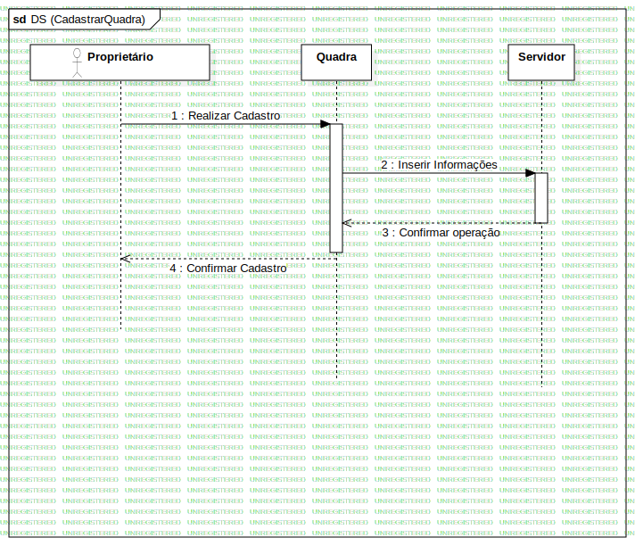

Interaction1
UMLInteraction
MatchMaker
::
DiagramasDeSequencia
::
CadastrarQuadra
::
Interaction1
Description
none
Diagrams

DS (CadastrarQuadra)
Participants
Classe: Quadra
Classe: Servidor
Ator: Proprietário da Quadra
Messages
Realizar Cadastro (Ator→Classe)
Inserir Informações (Classe→Classe)
Confirmar operação (Classe→Classe)
Confirmar Cadastro (Classe→Ator)
Properties
Name
Value
name
Interaction1
stereotype
null
visibility
public
isReentrant
true
Owned Elements
DS (CadastrarQuadra)